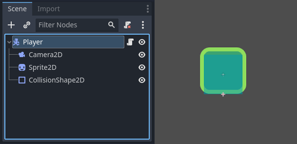
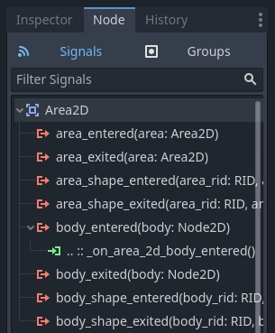

Overview of Godot's key concepts
Every game engine revolves around abstractions you use to build your applications. In Godot, a game is a tree of nodes that you group together into scenes. You can then wire these nodes so they can communicate using signals.
These are the four concepts you will learn here. We're going to look at them briefly to give you a sense of how the engine works. In the getting started series, you will get to use them in practice.
Scenes
In Godot, you break down your game into reusable scenes. A scene can be a character, a weapon, a menu in the user interface, a single house, an entire level, or anything you can think of. Godot's scenes are flexible; they fill the role of both prefabs and scenes in some other game engines.

You can also nest scenes. For example, you can put your character in a level, and drag and drop a scene as a child of it.

Nodes
A scene is composed of one or more nodes. Nodes are your game's smallest building blocks that you arrange into trees. Here's an example of a character's nodes.

It is made of a CharacterBody2D node named "Player", a Camera2D, a
Sprite2D, and a CollisionShape2D.
Note
The node names end with "2D" because this is a 2D scene. Their 3D counterparts have names that end with "3D". Be aware that "Spatial" Nodes are now called "Node3D" starting with Godot 4.
Notice how nodes and scenes look the same in the editor. When you save a tree of nodes as a scene, it then shows as a single node, with its internal structure hidden in the editor.
Godot provides an extensive library of base node types you can combine and extend to build more powerful ones. 2D, 3D, or user interface, you will do most things with these nodes.

The scene tree
All your game's scenes come together in the scene tree, literally a tree of scenes. And as scenes are trees of nodes, the scene tree also is a tree of nodes. But it's easier to think of your game in terms of scenes as they can represent characters, weapons, doors, or your user interface.

Signals
Nodes emit signals when some event occurs. This feature allows you to make nodes communicate without hard-wiring them in code. It gives you a lot of flexibility in how you structure your scenes.

Note
Signals are Godot's version of the observer pattern. You can read more about it here: https://gameprogrammingpatterns.com/observer.html
For example, buttons emit a signal when pressed. You can connect a piece of code to this signal which will run in reaction to this event, like starting the game or opening a menu.
Other built-in signals can tell you when two objects collided, when a character or monster entered a given area, and much more. You can also define new signals tailored to your game.
Summary
Nodes, scenes, the scene tree, and signals are four core concepts in Godot that you will manipulate all the time.
Nodes are your game's smallest building blocks. You combine them to create scenes that you then combine and nest into the scene tree. You can then use signals to make nodes react to events in other nodes or different scene tree branches.
After this short breakdown, you probably have many questions. Bear with us as you will get many answers throughout the Getting Started series.